Até o momento, utilizamos o HTML 5 para a demarcação do conteúdo, como textos, tabelas, imagens, videos e assim por diante. No entanto, o site geralmente não fica nada atrativo.
Assim, vamos fazer uso do CSS (Cascading Style Sheets - Folha de Estilo em Cascatas) em sua versão 3 que será utilizado para a estilização de conteúdo. Essa ferramenta permite alterar cores, fontes, tamanhos, sombras, posicionamento e mais inúmeras funcionalidade.
Para trabalharmos com o CSS e realizar a estilização de um determinado elemento, precisamos compreender a sua sintaxe que se dará de uma forma diferente ao que era feito em HTML. Passaremos a utilizar um SELETOR, que basicamente vai definir o elemento que será estilizado. Após ele, vamos abrir e fechar um escopo atráves das {chaves} para começar, na prática, a estilização.
Agora, já trabalhando dentro do escopo, para alterar alguma caracteristica de algum elemento, vamos utilizar uma PROPRIEDADE, seguido de dois pontos (:) e do respectivo valor que esta vai receber.
Para ficar mais claro, a sintaxe de geral ficaria da seguinte forma:
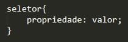Por exemplo, vamos definir que um determinado parágrafo <p> vai ter o tamanho da sua fonte alterado para 20px. Como fazer isso?
Observe:
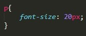Observe um detalhe importante sobre esse exemplo: a propriedade font-size é um exemplo de Propriedade Específica. A propriedade em si, é a font, que é responsável por alterar as características das fontes. Quando definimos um font-size, defenimos especificadamente que estamos alterando o tamanho da fonte.
A sintaxe de uma Propriedade Específica ficaria a seguinte:
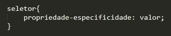Exemplo:
Característica: font-size
Propriedade: font
Especifidade: size
DETALHE: É obrigatório o uso de um ponto e vírgula no final de cada linha de comando!! (Exceto na última linha do escopo, onde o seu uso é opcional!)
Ainda é possível realizar COMENTÁRIOS dentro do código através da seguinte sintaxe:
/* comentario */
Vamos a mais um exemplo de código CSS:
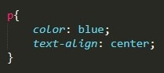Neste caso, temos que os parágrafos estão recebendo a cor azul e o texto está sendo centralmente alinhado. Note, que a segunda propriedade é uma especifica.
Existem três maneiras de fazermos isso:
| Inline |
|
|---|---|
| Incorporado | |
| Externo |
A ordem em que os mesmos foram apresentados, também representa a ordem de prioridade entre eles. Ou seja, se uma formatação for aplicada através do CSS Externo, e outra for formatação diferente for aplicada ao mesmo elemento através do CSS Incorporado, esta segunda será de fato aplicada e renderizada. A mesma lógica se aplica com o CSS Inline. Caso haja um CSS Inline, essa será a formatação aplicada e renderizada, independentemente do que já havia sido pré-determinado, seja por CSS Externo ou Incorporado.
Para entendermos e enfatizarmos a importância do CSS, vamos explorar um exemplo que se encontra no site na w3schools disponivel no seguinte endereço: https://www.w3schools.com/css/css_intro.asp
Observe que no início da página tem um código de exemplo. Já no lado esquerdo, note que possui um menu com algumas opções: "Stylesheet 1", "Stylesheet 2", "Stylesheet 3", "Stylesheet 4" e "No Stylesheet".
Alterne entre eles e veja o que acontece:
Notou que em todos os casos o conteúdo é o mesmo? O único fator que varia é o CSS e que, através do mesmo, é possivel transformar um site da forma que desejarmos. O CSS é um grande aliado e insdispensável na construção de um site bonito e facilmente usual.
Antes de irmos para a parte prática, é sugerida a instalação da extenção Browser Preview no seu Visual Code, que auxilia no desenvolvimento do site.
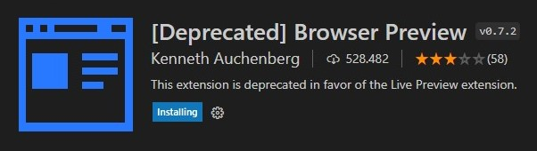A extenção permitirá desenvolver o código com o site sendo exibido imediatamente ao lado, dentro do próprio Visual Code, da seguinte forma:
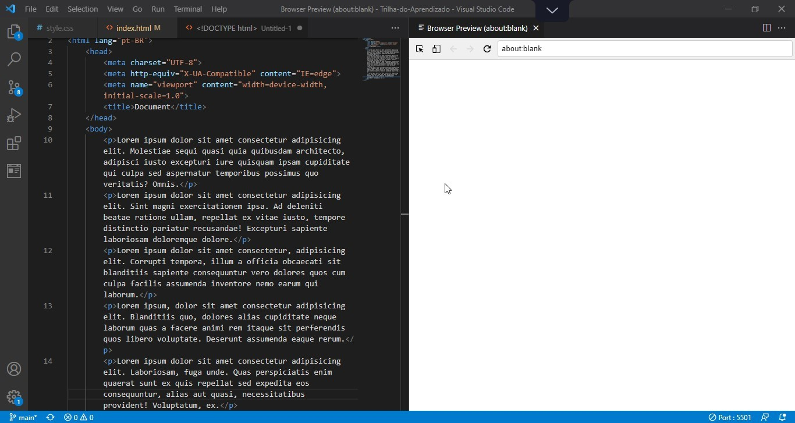Para utilizá-lo, primeiramente iremos no caminho em que se encontra o arquivo que se desejas abrir, clica com o botão direito e escolhe a opção "Abrir com Live Server".
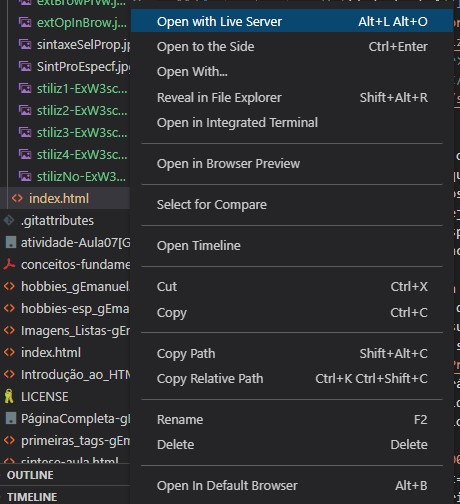Após abrir o arquivo no navegador, copie o endereçamento dado na barra de URL!
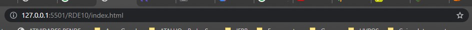Retorne ao Visual Studio Code e cole este endereço no Browser Preview!
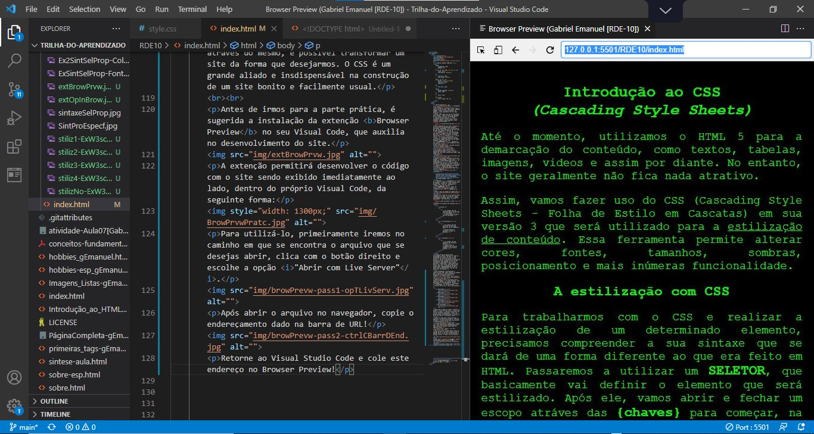Pronto, agora já está tudo pronto, vamos para a parte prática!
Para isso de conversa, vamos utilizar a seguinte estrutura base:
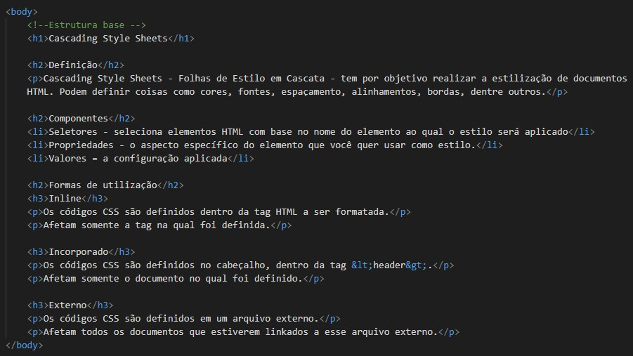Ela vai nos resultar na seguinte página:
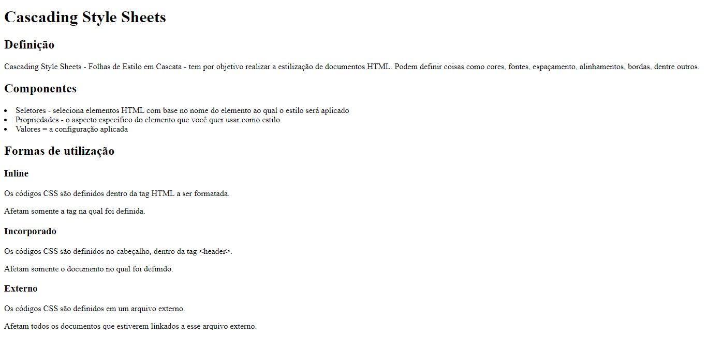Caso não se lembres, clique aqui para retomar o assunto!
Para começarmos, vamos definir uma cor verde para o título do nosso código exemplo através do CSS inline. Para isso, vamos fazer uso do atributo style, que vai receber a formatação para APENAS ESSA tag.
Como mencionado, vamos fazer isso a mudança do <h1> para verde através da propriedade color e seguido da sua respectiva cor.
Dessa forma, o nosso código ficará da seguinte forma:
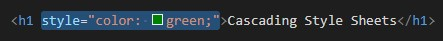Visualmente, temos:
Além disso, vamos definir a cor de fundo do <h1> através da propriedade background-color, que funcionará da mesma forma.
Neste caso, vamos definir a cor "darkseagreen"
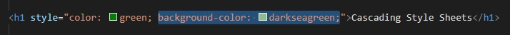O resultado ficou assim:
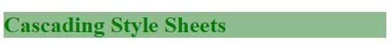Note um detalhe importante: ao digitar dark, observe que o próprio Visual Code lista muitas opções de cores que podem ser utilizadas:
.jpg)
Além disso, é possível usar em torno de 140 tipos de formas de definir cores, como a Escrita em Hexadecimal [#FF0 - amarelo] ou a Escrita em RGB [(0,0,255) - blue], por exemplo.
Para finalizar, vamos alinhar esse título no centro através da propriedade text-align seguido da respectiva orientação. Seus valores possíveis são:
Neste caso, a nossa formatação ficará assim:
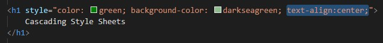Na prática:
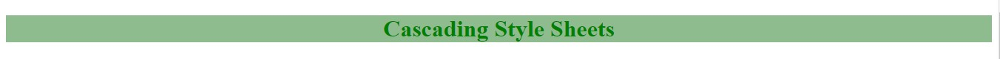Agora, vamos definir que o nosso <h2> "Componentes" receberá a cor verde. Podemos fazer da seguinte forma:
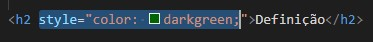Na prática, ficaria assim:
Agora, vamos alterar o tamanho do parágrafo imediatamente abaixo a esse <h2>, para 20 pixels. Para isso, utilizaremos a propriedade font-size. Ela pode ser definida em várias unidades, mas nesse caso, usaremos os pixels (px).
Portanto, vamos ter:
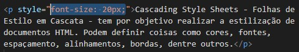Antes:
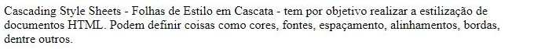Depois:
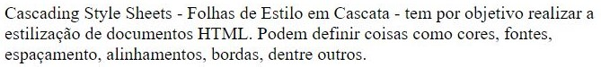Aplique essa mesma formatação nas demais tags. Aplique a cor seagreen!
Para finalizarmos, aplique uma cor a seu gosto, através da tag <body> e utilizando-se da propriedade background-color
Para isso, podes utilizar-se da ferramenta que o próprio Visual Code disponibiliza quando o cursor é posicionado acima do quadradrinho com a foto e permite ajustá-la mais facilmente a seu gosto, permitindo, inclusive, a alteração da sua opacidade (transparência).
.jpg)
No meu caso, utilizei a cor (193,236,193) e o código ficou assim:
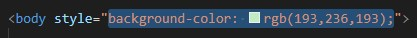Na prática:
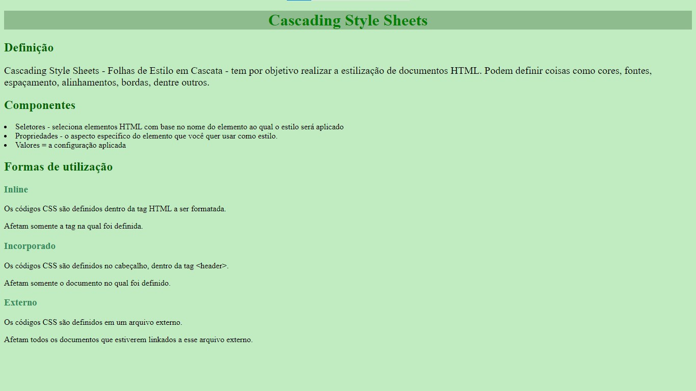Além disso, vamos alterar, por meio do <body>, a fonte de todo texto que será exibido na tela. Para isso, usaremos a propriedade font-family, que vai definir uma cadeia de caracteres. Observe que ao digitar esse comando, ele vai listar uma série opções:
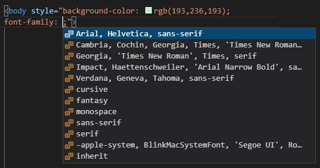No meu caso, usarei o seguinte conjunto de fontes: "'Franklin Gothic Medium', 'Arial Narrow', Arial, sans-serif;", da seguinte forma:
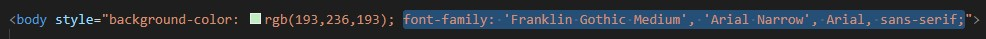E na prática ficou da seguinte forma:
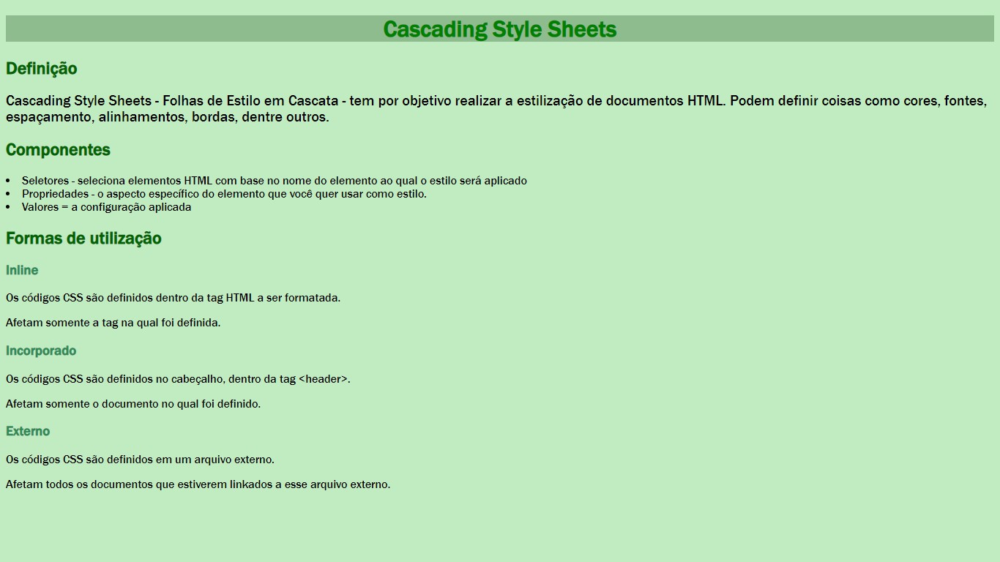Conseguimos personalizar e formatar o nosso site. Mas, e se quisermos por exemplo, mudar todos os <h2> para uma outra cor? Suponhamos que seja uma página longa, é viável fazer essa manutenção da página? Bom, na realidade, sim, é possível. Porém, demanda muito tempo e dá muito trabalho procurar tag por tag e alterar cada uma individualmente. Assim, vamos aprender a otimizar e deixar o nosso CSS ainda mais viável que facilite a manutenção do mesmo.
Caso não se lembres, clique aqui para retomar o assunto!
Para início de conversa, vamos definir uma tag <style> dentro do escopo da tag <head>. No meu caso, ficará abaixo da tag <title>, da seguinte forma:
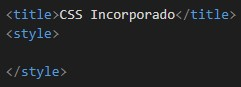Agora, para começarmos a formatação, vamos indicar primeiramente o seletor, ou seja, o que vai ser formatado. Neste caso, vamos iniciar formatando o <body> e em seguida, abrimos o escopo de formatação com as chaves, da seguinte forma:
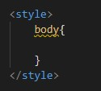Dentro desse escopo, indicamos a formatação que o seletor irá receber, no caso, à tag <body>. Neste caso, vamos definir um família de fontes que será aplicado em todo o documento HTML. Para exemplificar, usarei este seguinte comando: "'Segoe UI', Tahoma, Geneva, Verdana, sans-serif;"
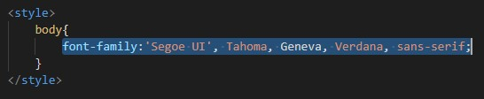Observe o resultado na prática:
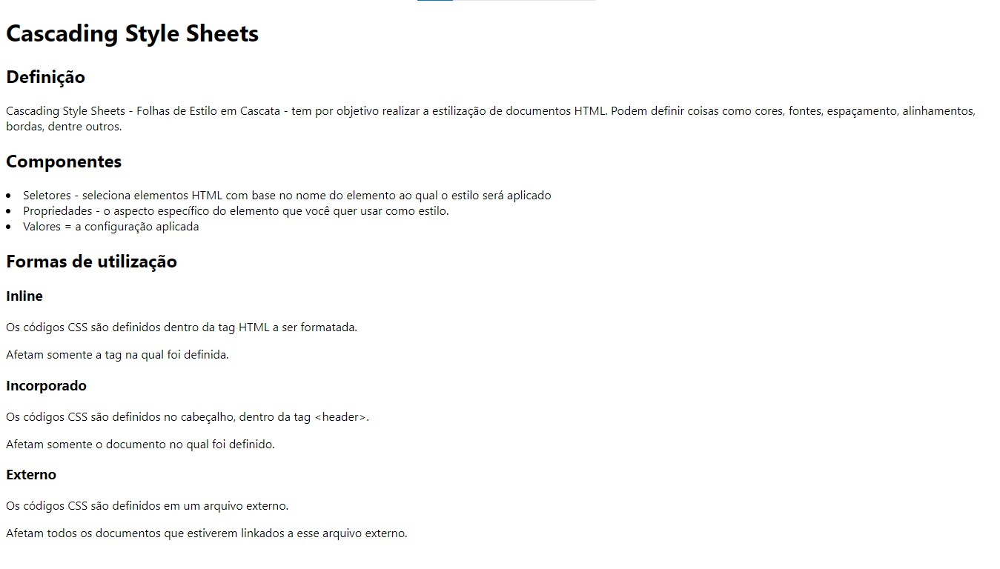Mas, porque 'família' de fontes?
A razão para definir tantas fontes, é como uma forma de segurança para, caso a primeira fonte definida não esteja disponível ou funcionando, o navegador usará a segunda. Se não funcionar, usará a terceira e assim por diante. De forma mais clara, o navegador, nesse exemplo, vai tentar usar a fonte 'Segoe Ui'. Se ela não funcionar, ele vai tentar usar a Tahoma, que é a segunda fonte. Se ela não funcionar, vai tentar a Geneva. Caso ainda não funcione, usará a Verdana. E se não funcionar, usará uma fonte genérica sans-serif que esteja disponível.
Dito isso, vamos continuar a formatar o nosso <body>, alterando a cor de fundo para o mesmo. Usaremos a cor darksalmon, obtendo o seguinte código:
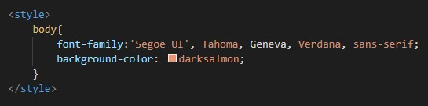Na pratica:
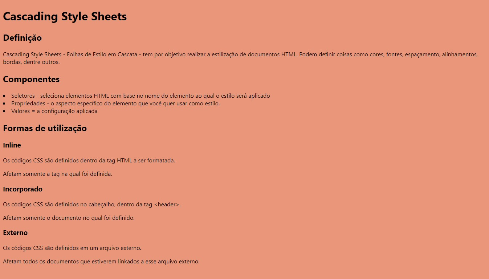Feito isso, vamos formatar o <h1>, definindo, como cor de fundo, darkred, como cor de texto, darksalmon e alinhar centralmente o texto.
Para isso, podemos utilizar o seguinte código:
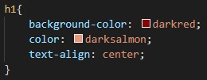Causando esse efeito:
Agora vamos a um detalhe importante importantíssimo: vamos formatar o <h2>
Caso não se lembres, clique aqui para retomar o assunto!
ÚLTIMA MODIFICAÇÃO: 18 de outubro de 2021 às 12:53, Horário de Brasília - Brasil